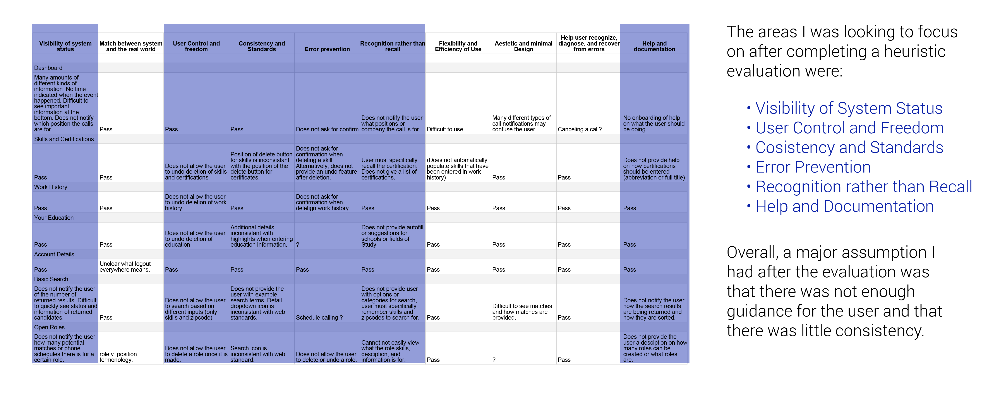
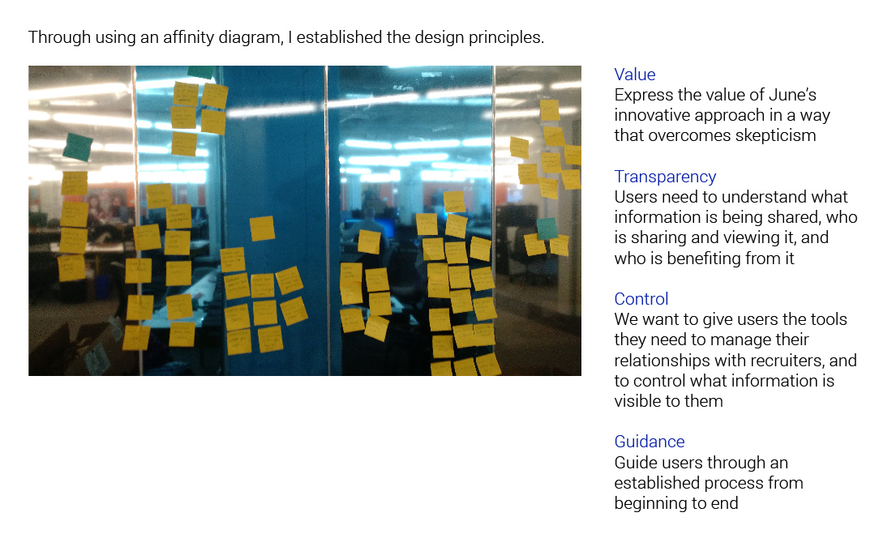

June
Client
June
Summary
June is a website that is a website that is reinventing the hiring process for professionals in the technology industry. The website aims to reward tech professionals to listen to recruiters’ job offers. My role on this project was UX designer on a team of one other UX designer. The goal was to improve the usability of the site and to make sure that the users understood the unique approach June had to the hiring process.
Skills & Methods
Background
In my first meeting with the client we discussed the goals of his website, June, a job website for both technology professionals and recruiters. Since the client had already verified his concept and created a live website, I thought it would be best to perform a heuristic evaluation and usability tests to see how well the website performed with users. From there, I could identify any problematic areas and work to improve those parts for the client.
Heuristic Evaluation
Because the site was already a live product and running, I decided to perform a heurisitic evaluation to give me some assumptions on which areas to look to improve upon. From my evaluation, I discovered that June had little guidance for the user, had no confirmations for actions, and no error prevention. The user was often lost because there was no guidance, no help buttons, and unclear information architecture.
Usability Testing
To validate that the assumptions from the heuristic evaluation were a concern, I conducted several usability tests followed by a series of follow up questions. Our users were people that worked in the technology industry. For the test, I had the users perform a set a tasks. All of the assumptions from the heuristic evaluation were confirmed, and the largest problem area was that the users were unclear what they had to do and where information was located on the site. Another interesting occurrence from the tests was that some users did not trust the site and felt like it was a scam for their information they were putting in. This was a large problem we had to fix. With this in mind, we then came up with a proposed scope we could tackle in the time frame given, focus on information architecture and onboarding for the candidate and the ability to easily control what information they want the recruiter to see.
Information Architecture
Because one of the main problems I found was that users were confused at the structure and organization of the site, it was clear that I needed to work on the information architecture of the site. To solve this problem, I used card sorting in order to gain an understanding of the end user’s mental model of the site.
Design Principles
After I had an idea of how the information architecture should be arranged, I also needed to know how the structure of the site should look. Through affinity diagraming with the information obtained through the usability tests, I created four design principles that would both help the user’s needs and represent the spirit of June’s goal.
A/B Testing
With the design principles to adhere to, my partner and I both created wireframes individually to solve the user problems we found. Because users had a difficult time understanding what to do, I After doing separate usability tests, we A B tested the two wireframe concepts against each other. In the end, we combined features that tested well from each wireframe into one prototype and fixed any potential problem areas that were important to include.
Final Wireframes
After rapid prototyping, which involved three rounds of testing and iterating, I created the final prototype in Axure to demonstrate to the client a solution to his website’s usability issue.